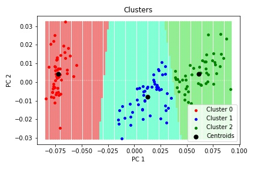
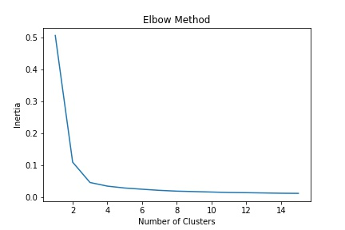

K-Means Clustering (Python)
I’ll be using a K-Means clustering algorithm to group a sample of data. Input features will be rescaled to ensure all variables are treated as if they have the same weight. Number of clusters will be selected using the Elbow method. This will be done algorithmically by using the line from the inertia of the first cluster to the last, with the number of clusters selected by the furthest distance to the line. Once a K-Means model has been selected, I’ll be using Principal Component Analysis to reduce the dimensionality of my input data to 2 so that I can display the results of my clustering model graphically, in a way that is more visually clear.
The data being used comes from the Iris dataset. The Iris dataset consists of 4 input variables that describe the length and width of the flowers' sepals and petals, and 1 target variable that is the species of the flower. The dataset contains 150 records.
| Id | SepalLengthCm | SepalWidthCm | PetalLengthCm | PetalWidthCm | Species |
|---|---|---|---|---|---|
| 1 | 5.1 | 3.5 | 1.4 | 0.2 | Iris-setosa |
| 2 | 4.9 | 3.0 | 1.4 | 0.2 | Iris-setosa |
| 3 | 4.7 | 3.2 | 1.3 | 0.2 | Iris-setosa |
| … | … | … | … | … | … |
The dataset is available here: https://archive.ics.uci.edu/ml/datasets/iris.
Summary
It can be seen in the graph that 2 of the species had very similar characteristics. More data might be needed to more easily different 2 species of similar sized petals and sepals. Data such as RBG values for the petal colour may help.
One of the key issues with K-Means clustering can be clearly seen in the empty space between clusters 2 & 3. New data that falls into this empty region likely shouldn’t be classified into either cluster, but K-Means does not consider noise.

Most of the records were classified into the same cluster.
| Flower | Cluster 0 | Cluster 1 | Cluster 2 |
|---|---|---|---|
| Setosa | 0 | 50 | 0 |
| Versicolor | 5 | 0 | 45 |
| Virginica | 0 | 0 | 50 |
Normalisation
It is best to normalise this dataset before applying a clustering algorithm. Variables in this dataset will have naturally different scales which will cause some variables to have heavier weighting in the clustering algorithm. To ensure that all variables are given the same weight in influence.
There can be some circumstances where normalising is not suitable, such as when dealing with coordinate variables like latitude and longitude.
In this case I’ll being using normalize from the Scikit-Learn library to rescale the variables to unit norm. This will place all variable on a scale between 0 and 1.
from sklearn.preprocessing import normalize
K-Means Clustering
In the following python code \(X\) will denote a NumPy matrix array (150, 4) for input variables.
K-Means clustering algorithm seeks to split the data into a given number of clusters by minimizing the within-cluster variance. The resulting model can classify new data into modelled clusters by selecting the closest centroid for any given new data, which does give it predictive power. By dealing with new data in this way, the K-Means model essentially splits your entire vector-space into regions associated to each cluster. This means that the K-Means method cannot account for noise in your data and will be influenced by anomalous data points.
To select an appropriate number of clusters for K-Means, I’ll be using the elbow method with K-Means inertia. First define a simple function to calculate the inertia of a fitted K-Means model with a given number of clusters.
from sklearn.cluster import KMeans
def inertia_value(X, k):
# Fit K-Means model for given k
kmeans = KMeans(n_clusters=k, random_state=0).fit(X)
# Return inertia
return kmeans.inertia_
And then calculate the inertia for a range of cluster numbers.
# Minimum k
k_start = 1
# Maximum k
k_max = 30
# List of all inertia values
inertia_list = [inertia_value(X, k) for k in range(k_start, k_max+1)]
Results can then be plotted.

The appropriate cluster number could be eyeballed at this points, but I prefer mathematical selection method. A line can be plotted from the first inertia value to the last, and then the optimal cluster number can be selected as the furthest point from the line. For a straight line equation \(y = ax + b\), the gradient and intercept can be calculated simply. For a point \((x_0,y_0)\) and straight line \(y = ax + b\), the shortest distance is given by
$$ \frac{|ax_0 + y_0 + b|}{\sqrt{a^{2} + 1}} $$
Hence the following function can be written to select the appropriate cluster number.
def select_k(k_start, k_max, inertia_list):
# Straight line parameters
grad = (inertia_list[-1] - inertia_list[0]) / (k_max - k_start)
const = inertia_list[0] - grad * k_start
# List for all distances
dist = []
# Loop through list of inertias
for i in range(len(inertia_list)):
# Calculate and append distance
dist.append(abs(grad * (k_start + i) - inertia_list[i] + const) / np.sqrt(grad * grad + 1))
# Return k associated with largest distance
return k_start + np.argmax(dists)
When run on the data, this function selects 3 and the appropriate number of clusters. Interestingly, the selected number of clusters is actually 2 when using a lower maximum. As it’s known that there are 3 species in the dataset, it suggests 2 of the flower species have similar characteristics.
Visualize
Principal Component Analysis
I’ll be using principal components to reduce the dimensionailty of the dataset to 2. Principal Component Analysis (PCA) will give vectors that try to preserve the variance in the data. The principal components will be derived using PCA from Scikit-Learn library.
from sklearn.decomposition import PCA
pca = PCA(n_components=2)
pComponents = pca.fit_transform(X)
Results
Most of the records were classified into the same cluster.
| Flower | Cluster 0 | Cluster 1 | Cluster 2 |
|---|---|---|---|
| Setosa | 0 | 50 | 0 |
| Versicolor | 5 | 0 | 45 |
| Virginica | 0 | 0 | 50 |
It can be seen in the graph that 2 of the species had very similar characteristics. More data might be needed to more easily different 2 species of similar sized petals and sepals. Data such as RBG values for the petal colour may help.
One of the key issues with K-Means clustering can be clearly seen in the empty space between clusters 2 & 3. New data that falls into this empty region likely shouldn’t be classified into either cluster, but K-Means does not consider noise.